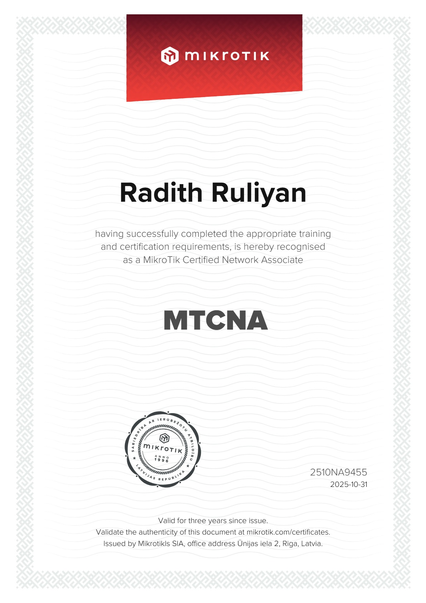
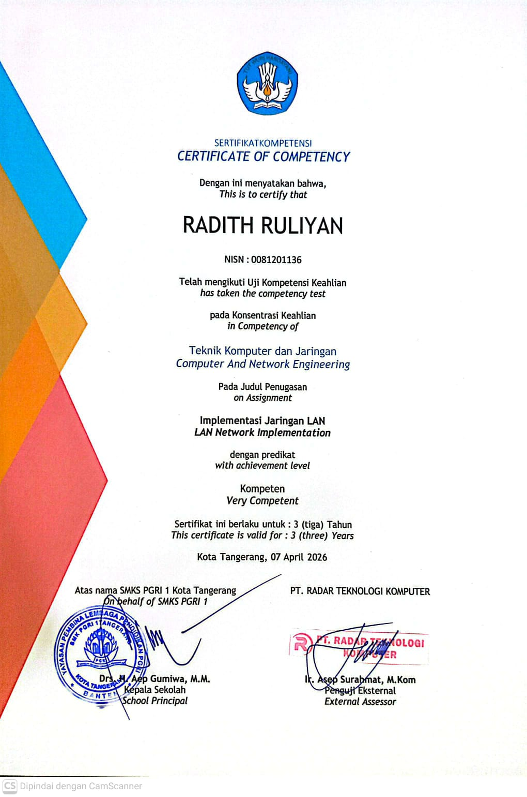
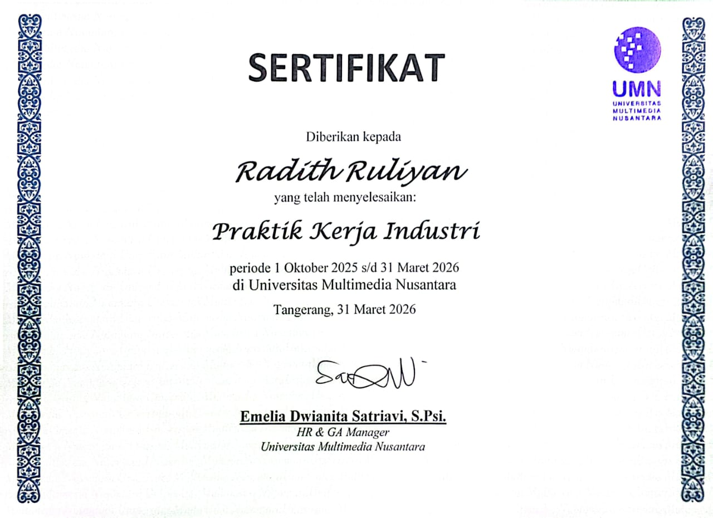
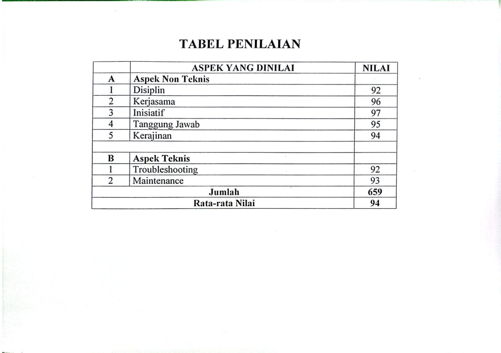
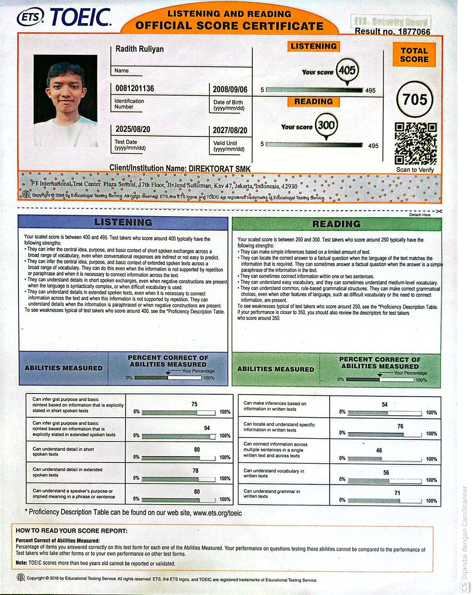

— Dokumen 01 / Profil
Halo, saya Radith Ruliyan.
Saya merancang & membangun
|
Saya adalah mahasiswa Sistem Informasi di Universitas Gunadarma yang memiliki ketertarikan pada pengembangan web, UI/UX, dan teknologi jaringan. Saya senang membangun website yang cepat, mudah digunakan, dan terus belajar melalui setiap proyek yang saya kerjakan.
Gulir— Dokumen 02 / Tentang
Tentang Saya

Saya adalah mahasiswa Sistem Informasi yang memiliki ketertarikan pada pengembangan web, UI/UX, dan teknologi jaringan. Saya senang membangun website yang cepat, mudah digunakan, dan terus mengembangkan kemampuan melalui setiap proyek yang saya kerjakan.
Saat ini saya fokus mempelajari pengembangan front-end modern menggunakan HTML, CSS, dan JavaScript, serta memperluas pengetahuan di bidang back-end dan desain antarmuka. Bagi saya, teknologi bukan hanya tentang menulis kode, tetapi juga menciptakan pengalaman yang bermanfaat bagi pengguna.
HTML & CSS
JavaScript
UI/UX Design
React
Node.js
Figma
Git
Unduh / Lihat CV
— Dokumen 03 / Karya
Portfolio
Berberapa proyek yang merepresentasikan cara saya bekerja.
— Dokumen 04 / Riwayat
Pendidikan
2026 — 2030
S1 Sistem Informasi
Universitas Gunadarma, Karawaci
Sedang menempuh pendidikan S1 Sistem Informasi. Mempelajari pengembangan perangkat lunak, basis data, analisis sistem, dan desain antarmuka pengguna.
2024 — 2026
SMK PGRI 1 Kota Tangerang
Jurusan TJKT (Teknik Jaringan Komputer dan Telekomunikasi), Kota Tangerang
Aktif di Organisasi Pecinta Alam RJWS.
2021-2024
MTsN 1 Kota Tangerang
Madrasah Tsanawiyah Negeri 1 Kota Tangerang
Menempuh pendidikan menengah pertama dengan fokus pada mata pelajaran umum dan agama.
— Dokumen 05 / Riwayat
Pengalaman
Oktober 2025 — Maret 2026
IT Support & Helpdesk (PKL)
Universitas Multimedia Nusantara (UMN)
Memberikan dukungan teknis kepada dosen, staf, dan mahasiswa terkait permasalahan perangkat keras maupun perangkat lunak. Melakukan instalasi sistem operasi, konfigurasi perangkat, troubleshooting komputer dan jaringan dasar, serta maintenance perangkat untuk memastikan operasional kampus berjalan dengan baik. Berkolaborasi dengan tim IT dalam menangani laporan pengguna dan menyelesaikan permasalahan teknis sehari-hari.
2026 — Sekarang
Mahasiswa S1 Sistem Informasi
Universitas Gunadarma
Mempelajari analisis sistem, business process, database, web development, serta membangun berbagai proyek portofolio sebagai sarana pengembangan kemampuan.
2026 — Sekarang
Personal Project Developer
Pengembangan Mandiri
Mengembangkan berbagai proyek pribadi seperti Helpdesk Ticket System, Financial Dashboard, dan website portofolio untuk mengasah kemampuan analisis sistem, pengembangan web, serta dokumentasi proyek.
— Dokumen 06 / Prestasi
Sertifikat & Lisensi
Lisensi resmi, sertifikasi kompetensi keahlian, penilaian praktik kerja, dan skor bahasa Inggris internasional.

MikroTik (Mikrotikls SIA, Latvia)
31 Oct 2025
MikroTik Certified Network Associate (MTCNA)
Cert ID: 2510NA9455
Berlaku s/d Oct 2028
Sertifikasi jaringan tingkat internasional dari MikroTik SIA. Mengonfirmasi kompetensi teknis dalam konfigurasi RouterOS, routing, firewall, wireless, bandwidth management, dan manajemen jaringan MikroTik.

SMKS PGRI 1 & PT Radar Teknologi Komputer
07 Apr 2026
Sertifikat Kompetensi UKK — Implementasi Jaringan LAN
Predikat: Kompeten (Very Competent)
Sertifikat Uji Kompetensi Keahlian (UKK) Teknik Komputer & Jaringan dengan judul penugasan Implementasi Jaringan LAN, diverifikasi oleh penguji eksternal PT Radar Teknologi Komputer.

Universitas Multimedia Nusantara
31 Mar 2026
Sertifikat Praktik Kerja Industri (PKL)
Periode: 1 Okt 2025 – 31 Mar 2026
Sertifikat resmi kelulusan Praktik Kerja Industri selama 6 bulan di UMN sebagai IT Support & Helpdesk, diterbitkan oleh Management HR & GA Universitas Multimedia Nusantara.

Universitas Multimedia Nusantara
Mar 2026
Tabel Penilaian PKL UMN — Rata-Rata Nilai: 94
Rata-Rata Nilai: 94 (Sangat Baik)
Transkrip hasil penilaian PKL UMN. Aspek Non-Teknis: Inisiatif (97), Kerjasama (96), Tanggung Jawab (95), Kerajinan (94), Disiplin (92). Aspek Teknis: Maintenance (93), Troubleshooting (92).

ETS TOEIC & Direktorat SMK
20 Aug 2025
ETS TOEIC Official Score Certificate (Skor: 705)
Total Score: 705
Sertifikat Resmi Kemampuan Bahasa Inggris Internasional (TOEIC Listening & Reading) dari ETS (Educational Testing Service). Listening Score: 405, Reading Score: 300.
— Dokumen 07 / Dokumen
Publikasi & Modul Pembelajaran
Koleksi panduan teknis, modul pembelajaran, dan dokumen referensi yang saya publikasikan di Scribd.
Panduan Dasar Jaringan Komputer Untuk Pemula
Panduan praktis mengenai konsep dasar jaringan komputer, arsitektur, dan dasar-dasar pengoperasian bagi pemula.
Panduan Menjadi IT Support
Dokumen panduan komprehensif langkah-langkah dasar, troubleshooting, dan best practice untuk berkarir di bidang IT Support & Helpdesk.
Panduan Belajar HTML
Modul materi dasar pemrograman web menggunakan HTML untuk pemula yang ingin memahami struktur halaman website.
Dasar-Dasar Sistem Informasi
Catatan dan ringkasan materi seputar konsep dasar sistem informasi, komponen teknologi, dan penerapannya.
Panduan Git & GitHub
Panduan dasar mengenai penggunaan Git versi kontrol dan alur kerja repositori di GitHub untuk pengelolaan kode.
— Dokumen 08 / Tulisan
Blog
Catatan singkat seputar proses kerja, teknologi, dan hal yang sedang dipelajari.
22 Jul 2026
Belajar JavaScript dari Nol untuk Pemula
Langkah demi langkah memahami konsep dasar JavaScript, sintaksis, variabel, serta penerapannya dalam membuat website interaktif.
Baca selengkapnya 22 Jul 2026
Panduan Belajar Git & GitHub untuk Pemula
Memahami konsep version control, perintah dasar Git, dan bagaimana mengelola repositori proyek secara rapi di GitHub.
Baca selengkapnya 22 Jul 2026
HTML dan CSS Bukan Cuma Soal Tampilan
Pentingnya struktur HTML yang bermakna (semantic) dan arsitektur CSS yang bersih untuk performa dan aksesibilitas website.
Baca selengkapnya 22 Jul 2026
Cara Saya Belajar Pemrograman Secara Otodidak
Metode, tantangan, dan strategi efisien yang saya terapkan saat mempelajari web development dan teknologi secara mandiri.
Baca selengkapnya 22 Jul 2026
5 Kesalahan yang Saya Lakukan Saat Pertama Belajar Coding
Refleksi dan pembelajaran penting dari kesalahan-kesalahan awal saat pertama kali mengenal dunia pemrograman.
Baca selengkapnya 22 Jul 2026
Cara Saya Mengatasi Error Saat Ngoding
Tips & trik melakukan debugging, membaca pesan error, dan mencari solusi masalah teknis dengan tenang dan terstruktur.
Baca selengkapnya 22 Jul 2026
Kenapa Saya Memilih Jalur Web Development?
Alasan dan motivasi pribadi memilih spesialisasi pengembangan web sebagai bidang utama yang ditekuni.
Baca selengkapnya 22 Jul 2026
Project Pertama yang Berhasil Saya Buat
Kisah di balik proyek awal yang saya bangun dan bagaimana proyek tersebut memicu semangat belajar saya lebih lanjut.
Baca selengkapnya 21 Jul 2026
Dari TJKT ke Sistem Informasi, dan Kenapa Saya Memilih Jalur Ini?
Perjalanan transisi dari latar belakang Teknik Jaringan Komputer & Telekomunikasi (TJKT) menuju S1 Sistem Informasi di Universitas Gunadarma.
Baca selengkapnya 21 Jul 2026
Pelajaran yang Tidak Saya Dapatkan di Kelas
Pengalaman 6 bulan sebagai IT Support & Helpdesk di Universitas Multimedia Nusantara dan pelajaran berharga di dunia kerja nyata.
Baca selengkapnya 21 Jul 2026
Mengapa Saya Memilih Membangun Portofolio Sejak Awal Kuliah?
Alasan pentingnya membangun karya dan portofolio nyata sejak awal masa kuliah untuk mengasah keterampilan practical di bidang teknologi.
Baca selengkapnya— Dokumen 09 / Hubungi
Kontak
Punya proyek atau sekadar ingin menyapa? Silakan isi form di bawah atau hubungi langsung.
Emailruliyanradith@gmail.com
Telepon+62 851-2442-3972
LokasiKp. Kalipaten, Kel. Pakulonan Barat 2, Kec. Kelapa Dua, Kab. Tangerang, Banten